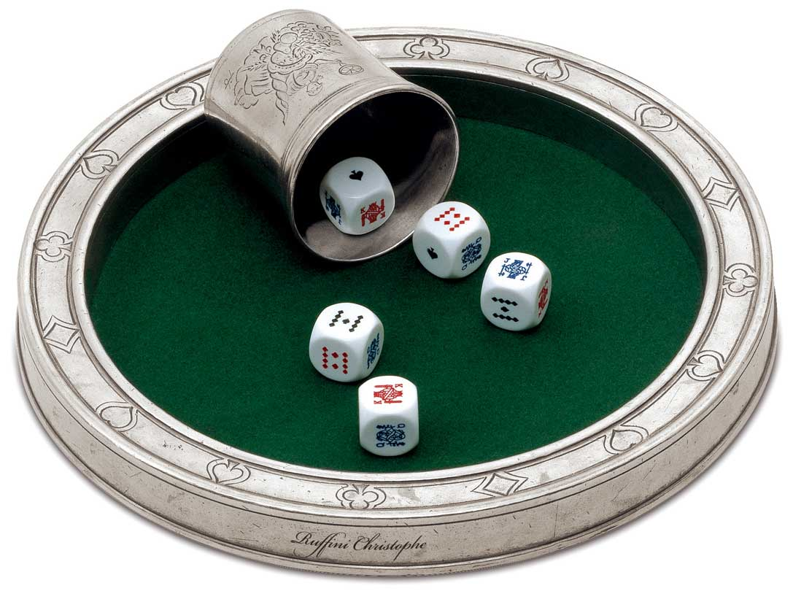
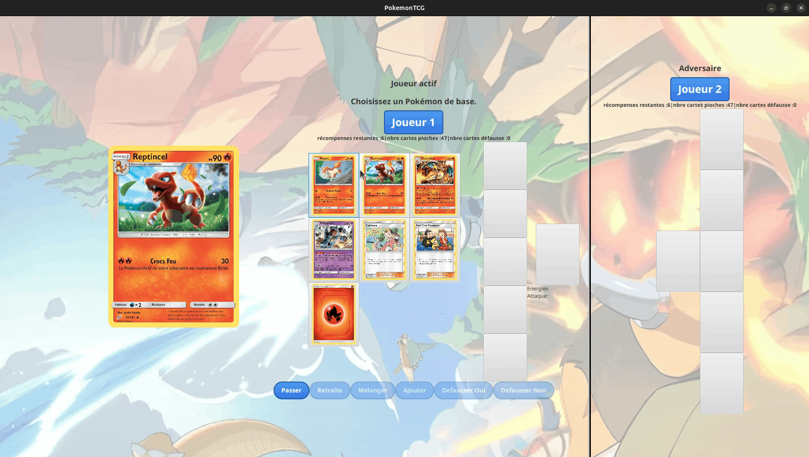
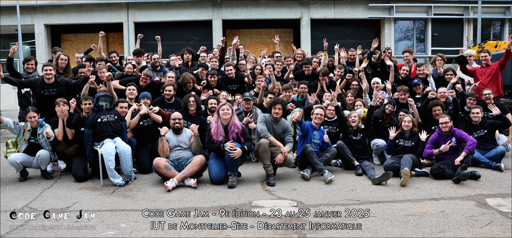
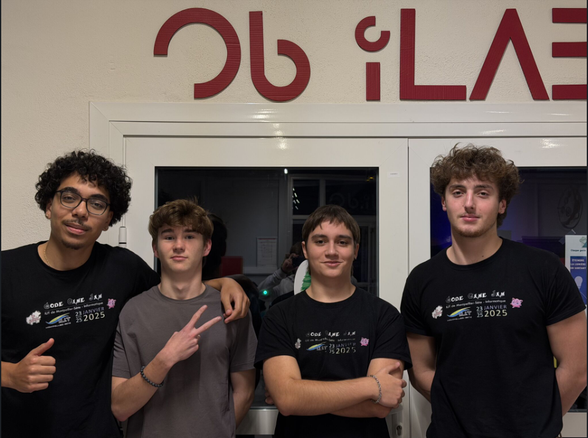

Site de vote en ligne
#PHP #MVC #SQL #Agile
Réalisation d’un site web de vote en ligne permettant de créer des questionnaires, gérer des utilisateurs et collecter des réponses. Le projet intègre un système d’authentification avec gestion des rôles et contrôle des accès, et a été développé en respectant une architecture MVC, des contraintes d’intégrité des données et des exigences de qualité logicielle, dans un cadre de gestion de projet agile.
Voir le
projet

SAE 1.01 : Jeu 421 avec IA
#Java #IA #POO #Probabilités
Développement en Java d’un jeu de 421 en console, intégrant une intelligence artificielle basée sur des probabilités. Le projet consistait à concevoir le moteur de jeu ainsi que différents niveaux d’IA capables de prendre des décisions stratégiques pour affronter un joueur.
Voir le
projet

SAE 2.02 : Pokémon TCG
#Java #JavaFX #MVC #OOP
Développement d’une version numérique du jeu de cartes Pokémon TCG, intégrant une logique métier complète ainsi qu’une interface graphique interactive en JavaFX. L’application permet de simuler des parties en respectant les principales règles du jeu, avec une attention particulière portée à l’ergonomie et à la fluidité de l’expérience utilisateur.
Voir le
projet

Code Game Jam 2025 & 2026
#GameDev #Teamwork #Agile
Participation à deux Game Jam organisées par mon IUT, durant lesquelles nous devions concevoir et développer un jeu vidéo jouable en environ 32 heures. Ces événements, réalisés en équipe, imposaient un thème à respecter et demandaient de produire un prototype fonctionnel dans un temps très limité. Ces expériences m’ont permis de découvrir le développement de jeux vidéo tout en travaillant en collaboration sur des projets créatifs et techniques.
Voir le
projet

Nuit de l'Info 2025
#WebDev #Teamwork #JavaScript
Participation à la Nuit de l’Info 2025, un événement national durant lequel des équipes d’étudiants doivent concevoir et développer une application web en une seule nuit à partir d’un sujet révélé au début de l’événement. Avec mon équipe, nous avons réalisé un site web interactif destiné à présenter la NIRD et ses principes de manière ludique à travers différentes activités et mini-jeux.
Voir le
projet